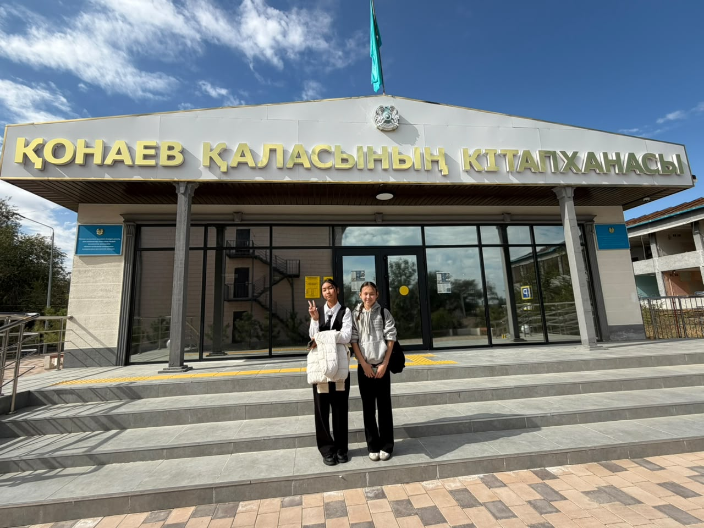
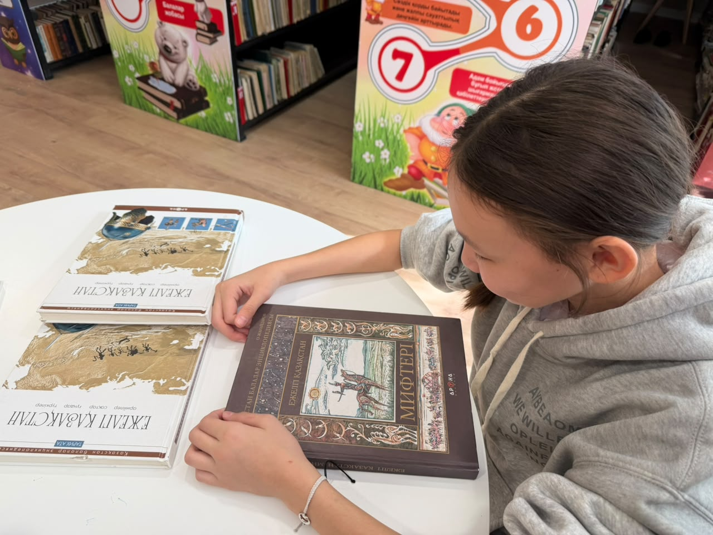
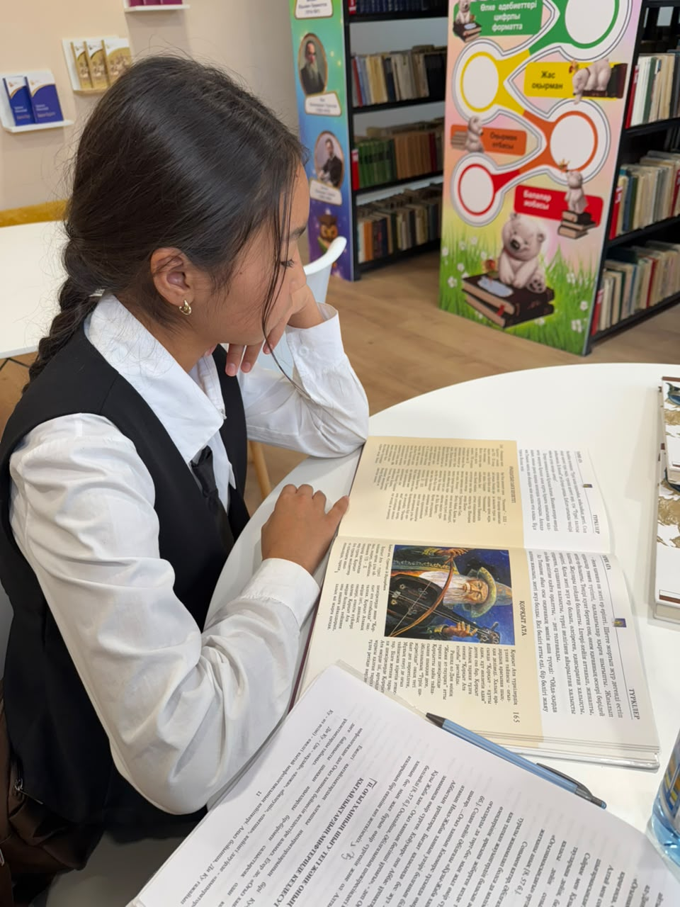
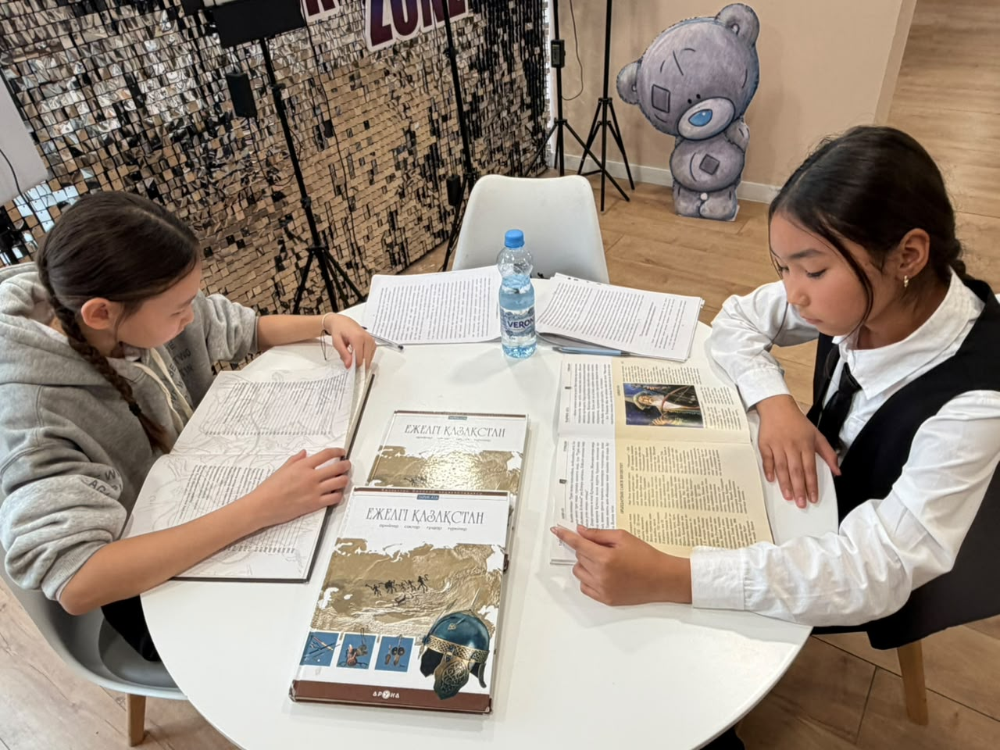
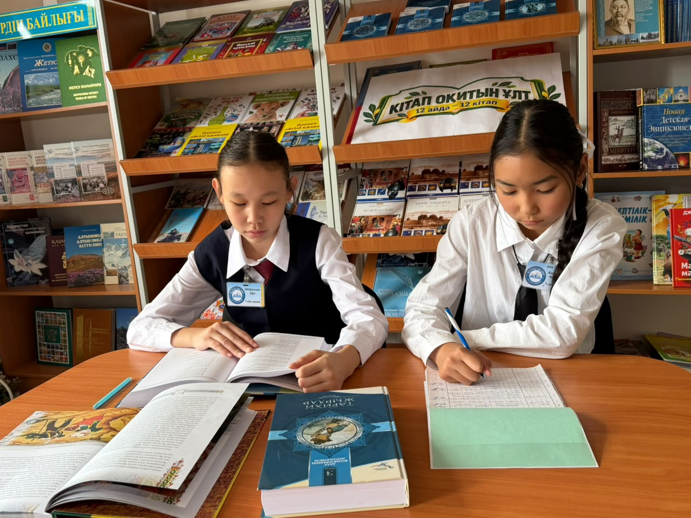
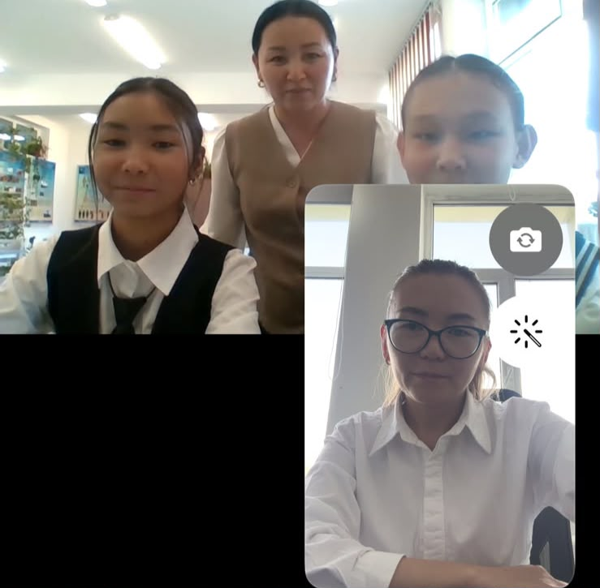

Ғылыми жобаның фото-видео есебі
«Оғыз ханның шығу тегі мен атауының этимологиясы»
Зерттеу жұмысының негізгі кезеңдерінен алынған фото және видео материалдар.
1-пункт
Кітапхана қорымен жұмыс (5 фото)
Қонаев қаласының кітапханасы

Қонаев қаласының кітапханасы алдында

«Ежелгі Қазақстан» энциклопедиясын қарау

Тарихи мәліметтерді талдау және жазу

Зере мен Қарақат бірлескен жұмыс үстінде

Кітапхана қорындағы құнды материалдарды зерттеу
2-пункт
Жетекші: Мұқан Әйгерім Болатқызы (1 фото, 1 видео)
Жетекшімен зерттеу жұмыстары

Ғылыми жетекші Мұқан Әйгерім Болатқызымен онлайн кеңес сәті